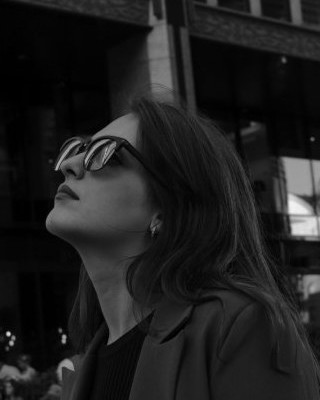

О себе
Продуктовый дизайнер, больше 2,5 лет в веб- и UX/UI-дизайне. Веду задачу от проблемы до проверки: гипотезы и метрики, скоуп MVP, user flow и интерфейс, юзабилити-тест и итерация. Сайты довожу до запуска сама
Работаю с ИИ: дизайн-систему собираю с Figma Agent, прототипы и презентации делаю в Claude. Ищу работу в продуктовой команде: B2C, e-commerce, edtech, спорт, медиа, lifestyle
Опыт работы
Продуктовый дизайнер (UX/UI), фриланс
Февраль 2024 — настоящее времяVidmer.dance — сайт лаборатории танца · vidmerdance.ru
- Расписание жило в переписке в Instagram и Telegram — за каждой деталью ученицы шли в директ
- Спроектировала структуру и путь записи: направление → расписание → запись в Telegram студии
- Весь цикл одна: информационная архитектура, прототип, UI, адаптив, сборка на Tilda (Zero Block), запуск
- Результат: ученицы смотрят расписание на сайте, а не спрашивают в директе
Также: серия афиш Frame Up Official, коммерческая презентация залов и банкетов караоке-клуба NEON
Проекты
Looma — мобильное приложение для танцевального сообщества
2026 · 2 месяца- Описала две роли — танцоры и педагоги — и их боль: занятия, события и люди разбросаны по чатам
- Задала North Star — записи в неделю — и 3 гипотезы с метриками конверсии, скорости записи и возврата
- Приоритизировала MVP: 5 функций, чат, оплату и отзывы отложила. Бизнес-модель: комиссия и подписка
- Провела юзабилити-тест кабинета педагога: 10 педагогов, 4 сценария, все справились без подсказок. Нашла узкое место — кнопку «Опубликовать» — и сделала её главным действием экрана
- Собрала UI-кит и дизайн-систему с Figma Agent, сделала интерактивную презентацию с прототипом
Навыки
Продукт: гипотезы и метрики · North Star · приоритизация MVP · бизнес-модель · юзабилити-тестирование
UX: Product Design · User Flow · сценарии · информационная архитектура · прототипирование
UI: дизайн мобильных приложений · адаптивный веб-дизайн · UI-кит · дизайн-системы · айдентика · презентации
ИИ в работе: Figma Agent (дизайн-система) · Claude (прототипы, презентации, сайт) · ChatGPT (тексты)
Инструменты: Figma · Tilda (Zero Block) · Photoshop
Образование
Языки: русский — родной, английский — A2